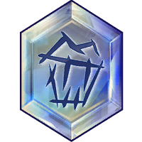
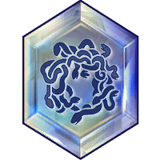
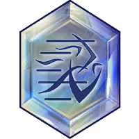

Escape Artist
Requirements
Trait: Wind
Slot: Major
Statistics
Health: +500
Stamina: +10
Discipline
Powers Granted
Purgative
Cleanses yourself of damage over time effects healing for 300 damage for each effect type and gives a short immunity to those removed.
Escapology
Adds a 50 Resolve when you are effected by Knockdown, Stun, Blind, Suppress, Cooldown Reduction or Push Effects.
Freedom Fighter
Requirements
Trait: Human, Nature, Wind
Slot: Major
Statistics
Health: +500
Stamina: +10
Discipline
Powers Granted
Free Action
Liberates group members and yourself gaining immunity to Crowd Control effects
for 9 seconds.
This attack can be instantly Flash-Cast.
This effect can only be applied to each target once every 30 seconds.
Purify
Removes and grants a short immunity to Blackmantle, Frostbite, Pulsing Damage Aura, Disease. Increses your Physical Resictances by 1000 for 12 seconds.
Night Terror
Requirements
Trait: Wind
Slot: Major
Statistics
Armor Penetration: Physical: +2%
Critical Damage: +5%
Discipline
Powers Granted
Petrification Illusion
Increases Basic Attack Damage by 10% for 15 seconds and modifies your third Basic Attack to slow enemies.
Terrifying Features
Protects you with a powerful enchantment periodically stunning attackers.
This can olny ocuur once every 24 seconds.
Petrifier
Requirements
Trait: Wind, Frost
Slot: Major
Statistics
Attack Power: Ice +50
Movement Speed Damage Bonus: +5%
Discipline
Powers Granted
Petrification Illusion
Increases Basic Attack Damage by 10% for 15 seconds and modifies your third basic attack to slow enemies.
Nothing To Lose
Sacrifices 500 Health to increase Critical Strike by 10%, Critical Damage by 10% and Power Damage Bonus: Melee by 5% for 15 seconds.
Speed Demon
Requirements
Trait: Myrmidon, Centaur, Wind
Slot: Major
Statistics
Elemental Resictance: +300
Health: +500
Discipline
Powers Granted
Closing Speed
Grants a Movement Speed Modifier increase by 2% for duration each time you are hit with a ranged attack as often as twice per second.
Marked For Death
Places a mark on your target, you and your group members deal additional weapon damage to the target when you hit it for 20 seconds.
Tubthumper
Requirements
Trait: Duelist, Wind, War
Slot: Major
Statistics
Anti Critical Strike: +3%
Health: +500
Discipline
Powers Granted
Spite
Recovers 187 Health every 2 seconds over 4 seconds each time you suffer a Knockdown, Stun, Blind or Suppress.
Escapology
Adds 50 Resolve when you are effected by Knockdown, Stun, Blind, Suppress, Cooldown Reduction or Push effects.
Windlord
Requirements
Trait: Wind, Dark
Slot: Major
Statistics
Health: +500
Movement Speed: In Combat: +2%
Discipline
Powers Granted
Pursuit
Increases your In Combat Movement Speed by 100% and Out Of Combat Movement Speed by 40% for 3 seconds.
First WInd
Heals rapidly for 450 every 2 seconds whenever your health is under 30% and
you have avoided damage for 4 seconds.
This can occur once every 30 seconds.